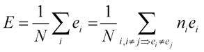
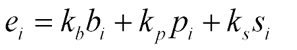
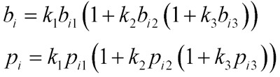
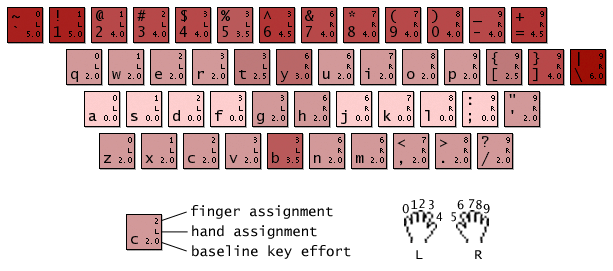
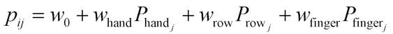
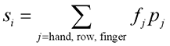
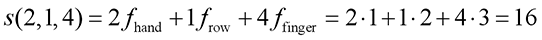

Carpalx optimizes keyboard layouts to create ones that require less effort and significantly reduced carpal strain!


 Download keyboard layouts, or run the code yourself to explore new layouts.
Download keyboard layouts, or run the code yourself to explore new layouts.
 X11 layouts are available! Patches to include Carpalx layouts in xkeyboard-config and kbd have been submitted by Perry Thompson. Meanwhile, many thanks to Sven Hallberg for providing X11 configuration for Carpalx layouts. Richard Gomes contributed an archive of these files for KDE/Gnome users.
X11 layouts are available! Patches to include Carpalx layouts in xkeyboard-config and kbd have been submitted by Perry Thompson. Meanwhile, many thanks to Sven Hallberg for providing X11 configuration for Carpalx layouts. Richard Gomes contributed an archive of these files for KDE/Gnome users.
 Love your coworkers? Switch them to QWKRFY layout or a fully optimized QGMLWY layout.
Love your coworkers? Switch them to QWKRFY layout or a fully optimized QGMLWY layout.
 Hate your coworkers? Switch them to TNWMLC layout. It's the only keyboard layout that has its own fashion line.
Hate your coworkers? Switch them to TNWMLC layout. It's the only keyboard layout that has its own fashion line.
Have ideas? Tell me.
16/aug/16 — Ergonomic Keyboard Layout Designed for the Filipino Language at AHFE2016 derives layout for Filipino language using Carpalx
18/apr/16 — Carpalx layouts soon to appear in freedesktop (package xkeyboard-config) and kbd. Thanks to Perry Thompson.
9/sep/14 — A new layout—De Correspondent—for the Dutch language in collaboration with De Correspondent.
16/may/14 — Added evaluation of the Norman layout. This layout modifies 14/26 keys and has statistics similar to Colemak. Detailed statistics are available.
12/feb/14 — Added evaluation of the abKey layout. Its alphabetic layout makes no attempt at ergonomics. Detailed statistics are available.
Typing Effort Model
ON THIS PAGE
Developing a Model of Typing Effort
The result of any keyboard layout search is dependent on (a) the training text, (b) determination of layout suitability and (c) the search algorithm. The choice of algorithm should not change the ideal layout, but only the likelihood of finding it. In practise, a poorly devised search strategy may seriously impact the likelihood of discovering a better layout. The choice of the training text will impact the generalizability of the layout - if the text is representative of the typist's daily tasks (representative in terms of key stroke combinations), then an optimized layout will be helpful in typing future texts of similar nature.
The fact is, the choice of training text and search algorithm is less subjective than the model for typing effort. For example, unless you are concerned with typing body copy specific to a field with domain-specific terms (e.g. medical texts), a year's worth of New York Times would arguably be a good corpus. If your search algorithm is appropriate, you will find a global minimum and you will have a layout on which typing a year's worth of NYT involves minimum effort - but only as far as quantified by your typing effort model.
Characteristics of a successful model
If you explore keyboard layout projects, such as Capewell or Arensito, you'll find that each approach is different and uses a combination of heuristic and algorithmic contributions to determining the goodness of a layout. There are certain properties of a good layout, however, that are widely agreed upon
- limited use of weak fingers, like pinky and ring finger
- limited use of bottom row
- increased use of home row
- limited finger travel distance
- limited same-finger typing (e.g. uhm)
- balanced hand-use vs right-hand priority (see below)
- alternating hand-use vs rolling (see below)
The question of balanced hand use is debated. Alternate-hand typing may not be as efficient as "rolling finger" typing, in which two successive strokes are typed by the same hand. Most typists find it faster and more comfortable to type "iu" than "it". The former stroke combination uses a rolling finger movement in which your wrist lightly rolls from the outside in. Generally, outward rolling (e.g. "ui", or even worse "io" or "op") is undesirable.
Some also argue for adjusting the layout to favour the right hand. The argument for this is that most individuals are right-handed and therefore their right hand is "stronger". My own experience does not reflect this, though. Being right handed and having typed for 20 years, I find my left and right hands ambidexterous when it comes to typing (but not much else).
Carpalx typing model
Carpalx uses a typing effort model which describes the perceived effort of typing. Given a training text, each layout has an associated typing effort and during layout optimization, this layout is adjusted until a global minimum in effort is reached. I've attempted to make the model flexible to avoid heuristic penalties. The model is highly parametrized, however, and you decide what is important to your layout and these parameters make the model highly subjective. The parameters can be adjusted to try to increase positive layout characteristics (see list above) and minimize aspects which make typing difficult. The task of solving the keyboard layout problem (if the problem is universally solvable - which I doubt, due to its subjective nature) can be reduced to the task of finding the ideal effort model for you.
The carpalx typing effort model is based on triads, which are three character substrings formed from the training text. A triad starts at each letter position. Thus, triads overlap, though this is configurable. The effort model takes into account contributions of the following characteristics
- finger travel distance
- hand, finger and row penalties
- stroke path
The effort associated with typing has two components: effort to hit a key (independently of preceeding and successive strokes) and effort to hit a group of keys. Independent effort is based on finger distance and includes hand/finger/row penalties associated with that key. The penalties provide a means to tune the parameters to reflect your typing abilities and preferences. The effort of hitting a group of keys is measured based on stroke path which assigns desirability to certain patterns of finger movement. More about stroke path below.
Triads: 3-key Effort
Introduced above, the input document is divided into triads, which are three-character substrings. The triad overlap is an adjustable parameter but generally is set to 2 to avoid starting position bias. Space characters are removed from the text up-front and do not impact the formation of triads, since the space bar is not considered relocatable and enjoys dedicated service by the thumbs. I chose to model effort using triads to help evaluate single-key and multi-key effort contributions.
For example, consider the text "typing is hard". If triad overlap is set to 2 (default), after the removal of spaces, the triads are
TEXT: typingishard
TRIADS: typ
ypi
....
har
ard
The typing effort for the text is the normalized total of triad typing efforts  where N is the total number of triads, ei is the effort of typing triad i. The number of unique triads is limited by the variety of characters in the input text and it is efficient to index all unique triads, each having ni instances. The validity of the model is based on the assumption that the desirability of a keyboard layout can be determined by considering the effort of individual triads. The use of triads limits the interaction effect of near-neighbouring keys on the final layout. By choosing to work with three-key combinations, I am limiting the degree to which long-range effects affect the final layout.
The effort of typing a triad, ei, is given by  where bi, pi and si are the base, penalty and stroke path effort components of the ith triad. In turn, the base and penalty components are given by 
Notice that the baseline and penalty efforts are defined symmetrically, with bij and pij being the base and penalty factors of the jth key in the triad. The stroke path term si is discussed further below.
The role of the kb, kp and ks factors is to weight the indidividual effort components. For example, by setting ks=0, the triad effort is no longer influenced by the stroke path.
Within each triad, the efforts of each key are combined using the k1, k2 and k3 parameters. For example, if k2=k3=0, then the effort of each triad is solely based on the effort of the first key in the triad. With this setting, the typing model contains no interaction terms between keys. However, as soon as k2>0 and/or k3>0, efforts of the second and/or third keys in the triad add to the total triad effort in proportion to the effort of the previous key(s) — in effect, the triad effort is compounded geometrically over the first two or three keys of the triad. The effect of this is that triads such as "zza" have a larger effort than the individual effort of their single-character components (the purpose of this is to model tiredness associated with typing successivel high-effort keys).
All weight factors ki should be non-negative, since negative typing effort has no interpretation within the model.
No negative effort?
Although hitting any key is associated with a finite amount of typing effort (some keys may be effortless for certain parameter combinations), the concept of negative effort is an interesting one. For example, the notion of recuperation could be considered by extending the correlation length of effort beyond the length of the triad. For example, after a long run of easy-to-type triads, one might consider that a certain amount of "finger rest" has been accumulated, which goes to offset the effort of subsequent, harder-to-type triads.
base effort is finger travel distance
The base effort for a key is defined solely by the finger travel distance for that key. This distance corresponds to the physical distance between keys, as measured on my BenQ x120 keyboard. This value is shown on each key in the figure below. 
The role of the base effort is to measure the total distance traveled by fingers during typing. Layouts that keep this value low are those that place frequently used keys on home row.
Instead of using a subjective measure of key effort, I decided to objectively define the effort by a combination of the physical keyboard distance and finger/row penalties (see below). This combination naturally results in a higher effort for z than q, because the bottom row carries a larger penalty than the top row (for both keys the base effort given by the finger travel distance is the same, as is the finger penalty)..
penalty component is hand, row and finger cost
The penalty component for a key is associated with the hand, row and finger for that key. Each hand, row and finger have unique penalties that reflect the degree to which using them is difficult. The penalty for key ji is given by 
where the w terms are weights and the P terms are the penalties associated with the hand, row and finger for key j. Typically, w0=0 (no default penalty), and Phand=0 (left and right hands are not individually penalized).
The role of the penalty is to model increased effort of the use of weak fingers (e.g. pinky) or hard-to-reach rows (e.g. bottom row). The penalty term can also differentially penalize one of the hands (e.g. associate a penalty with the left hand to favour the use of the right hand).
Layouts that have a low penalty are those that limit the use of the pinky, ring finger and the bottom row (note that this statement applies to a model parameter set that associates penalties with the use of these fingers and row).
personalized penalties
You can personalize the key stroke effort by adjusting hand, row and finger penalties to model use of any injured fingers or hands.
effortless keys and triads
Now a note about keys with zero-effort. Since a key's sum of base and penalty components, bij and pij, may be zero (such as the key "f"), if the key is the first in the triad, the triad has zero effort (excluding stroke path). If this is undesirable, set the baseline penalty, w0, to a positive value as described above.
For example, in the word coffee, which has triads cof/off/ffe/fee, the triads which start with f, a key with zero effort, will not count total effort of typing coffee if no stroke path contribution exists (k4 = 0). However, all triads count towards the total number of triads which is used to normalize the total effort sum. In the model, such effortless triads are like little typing breaks. This behaviour can be counteracted by ensuring that all ei>0 by (a) setting bij>0 or (b) setting w0>0.
Evaluating the Stroke Path
Not all triads, even those with equivalent baseline effort, are as easy to type. Consider "fjo" and "jfy". The former uses the ring finger which is penalized and the latter requires that the strong index finger reach for the y, a distant key. Depending on the model parameters, these triads may have the same effort. However, fjo is easier to type then jfy, which uses the same finger twice. Therefore, it's appropriate to add to the effort model a cost function which augments the typing cost with additional weighting of uncomfortable key combinations.
The effort associated with the stroke path is parameterized by the following indexes
- hand-alternation (ph)
- row-alternation (pr)
- finger-alternation (pf)
Each of these indexes (ph, pr, pf) may take the following values
| value | hand, ph | row, pr | finger, pf |
|---|---|---|---|
| 0 | both used, not alternating eem ope |
same ert als |
all different, monotonic progression asd pua |
| 1 | alternating aja sot |
downward progression, with repetition ern kam |
some different, key repeat, monotonic progression app err |
| 2 | same ase mon |
upward progression, with repetition ade nal |
rolling bih fad |
| 3 | - | some different, not monotonic, max row change 1 jab oar |
all different, not monotonic yak nep |
| 4 | - | downward progression eln pax |
some different, not monotonic progression kri maj |
| 5 | - | some different, not monotonic, max row change downward >1 hen kib |
same, key repeat cee loo |
| 6 | - | upward progression zaw nap |
some different, no key repeat, monotonic progression abr bde |
| 7 | - | some different, not monotonic, max row change upward >1 abe axe |
same, no key repeat tfb dec |
Any given triad has a unique stroke path index triplet (ph, pr, pf). This triplet is used to calculate the path effort for the triad. Note that some triplet values do not describe a valid path (e.g. 0*4 = alternating hand, same finger). The path effort for each triad is calculated as a weighted sum of the index values. This linear composition of triplet elements is appropriate because more difficult typing scenarios are parametrized by larger index values (e.g. pf = 0 is more desirable than pf = 7). 
The parameters fhand,row,finger assign a weight to each triplet element value. For example, consider the triad "abz". This triad is associated with the path triplet (ph, pr, pf) = (2,1,4). Consider a stroke model that uses the following stroke path weights, (fhand , frow , ffinger)=(1,2,3). 
In this example, the contributions of effort towards the stroke path from hand, row and finger terms is unbalanced: the finger term contributes +12 whereas the hand and row contribute +2 each. Using the English corpus, the weights (fhand , frow , ffinger) = (1,0.3,0.3) yield approximately a 1:1:1 ratio of hand, row and finger contributions to the stroke path over the entire corpus.
Below are the path efforts for weights (1,0.3,0.3).
|
|
|
||||||||||||||||||||||||||||||||||||||||||||||||||||||||||||||||||||||||||||||||||||||||||||||||||||||||||||||||||||||||||||||||||||||||||||||||||||||||||||||||||||||||||||||||||||||||||||||||||||||||||||||||||||||||||||||||||||||||||||||||||||||||||||||||||||||||||||||||||||||||||||||||||||||||||||||||||||||||||||||||||||||||||||||||||||||||||||||||||||||||||||||||||||||||||||||||||||||||||||||||||||||||||||||||||||||||||||||||||||||||||||||||||||||||||||||||||||||||||||||||||||||||||||||||||||||||||||||||||||||||||||||||||||||||||||||||||||||||||||||||||||||||||||||||||||||||||||||||||
As it is, these stroke efforts are very subjective. There are certain triads that I find particularly difficult to type. For example, I don't like upward row progressions (pr = 6) when the same hand and finger is used (ph = 2, pf = 7) . Triads such as bfr, cde and nhu are examples and have high stroke effort of 5.9.
Families of Typing Models
I applied different parameter sets to the layout optimization problem to examine the effect of model complexity. Values of baseline key stroke efforts based on finger travel distance, di, are described in the figure above and do not vary between model families. A list of parameter sets is found in the Carpax - Model Parameters section.
Training Texts
For optimizing English text, I use a corpus composed of the following
- Alice in Wonderland, by Lewis Carroll
- Dracula, by Bram Stoker
- Great Expectations, by Charles Dickens
- Huckleberry Finn, by Mark Twain
- Moby Dick, by Herman Melville
- Picture of Dorian Grey, by Oscar Wilde
- Pride and Prejudice, by Jane Austen
- Sense and Sensibility, by Jane Austen
- The Adventures of Tom Sawyer, by Mark Twain
- The Adventures of Sherlock Holmes, by Sir Arthur Conan Doyle
- The Count of Monte Cristo, by Alexandre Dumas
- Ulysses, by James Joyce
- Walden, by Henry Thoreau
These books are freely available from Project Gutenberg.
Another source of corpora is the Natural Language Toolkit Project.